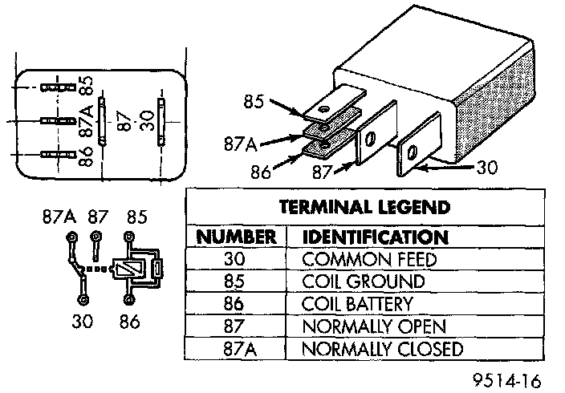
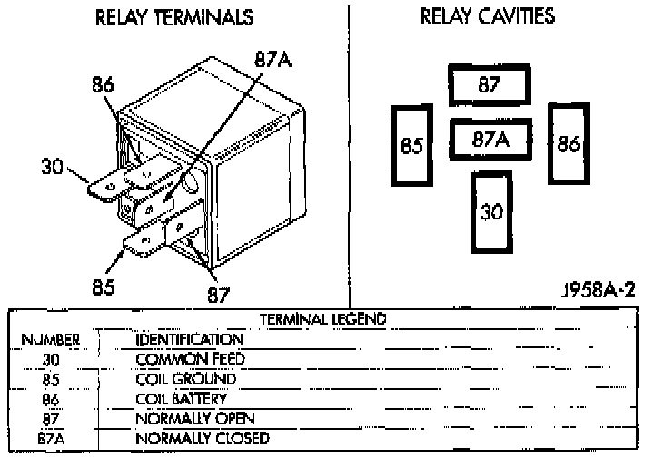

Component Test
ASD RELAYFig. 46 ASD & Fuel Pump Relay Terminals:

ASD And Fuel Pump Relay Terminals:

The following description of operation and tests apply only to the Automatic Shutdown (ASD) relay. The terminals on the bottom of the relay are numbered.
OPERATION
^ Terminal number 30 is connected to battery voltage at all times.
^ The PCM grounds the coil side of the relay through terminal number 85.
^ Terminal number 86 supplies voltage to the coil side of the relay
^ When the Powertrain Control Module (PCM) de-energizes the ASD relay, terminal number 87A connects to terminal 30. This is the Off position. In the off position. voltage is not supplied to the rest of the circuit. Terminal 87A is the center terminal on the relay
^ When the PCM energizes the ASD relay, terminal 87 connects to terminal 30. This is the On position. Terminal 87 supplies voltage to the rest of the circuit.
TESTING
1. Remove relay from connector before testing.
2. With the relay removed from the vehicle, use an ohmmeter to check the resistance between terminals 85 and 86. The resistance should be 75 +/- 5 ohms.
3. Connect the ohmmeter between terminals 30 and 87A. The ohmmeter should show continuity between terminals 30 and 87A.
4. Connect the ohmmeter between terminals 87 and 30. The ohmmeter should not show continuity at this time.
5. Connect one end of a jumper wire (16 gauge or smaller) to relay terminal 85. Connect the other end of the jumper wire to the ground side of a 12 volt power source.
6. Connect one end of another jumper wire (16 gauge or smaller) to the power side of the 12 volt power source. Do not attach the other end of the jumper wire to the relay at this time.
WARNING: Do not allow ohmmeter to contact terminals 85 or 86 during this test.
7. Attach the other end of the jumper wire to relay terminal 86. This activates the relay The ohmmeter should now show continuity between relay terminals 87 and 30. The ohmmeter should not show continuity between relay terminals 87A and 30.
8. Disconnect jumper wires.
9. Replace the relay if it did not pass the continuity and resistance tests. If the relay passed the tests, it operates properly Check the remainder of the ASD relay circuits.